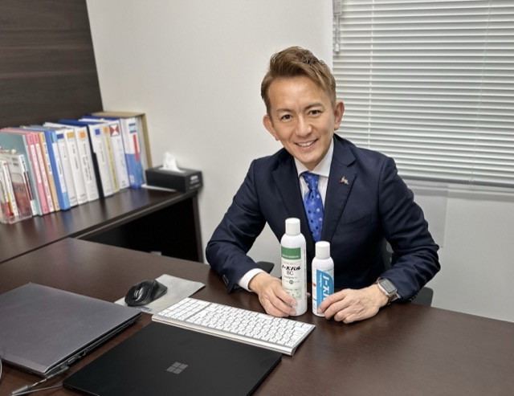
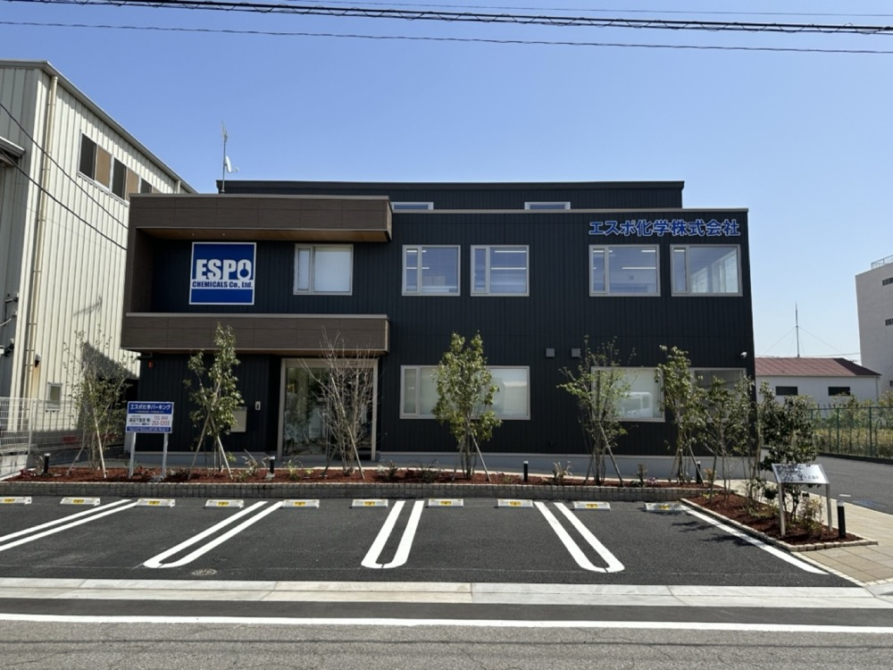
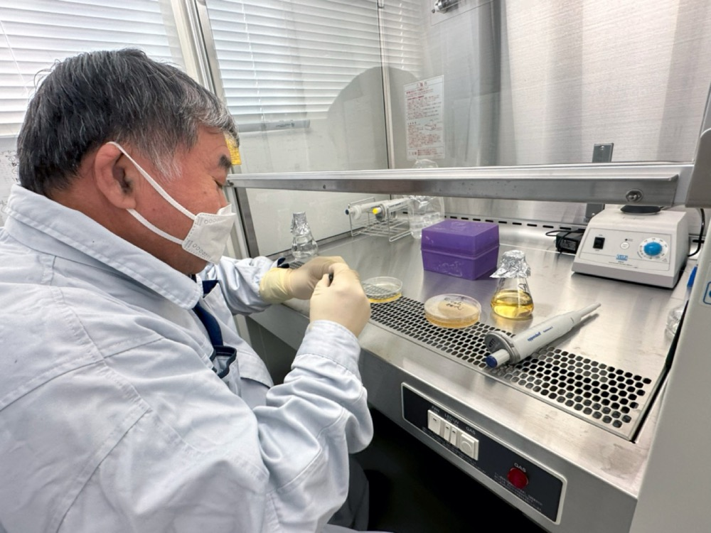
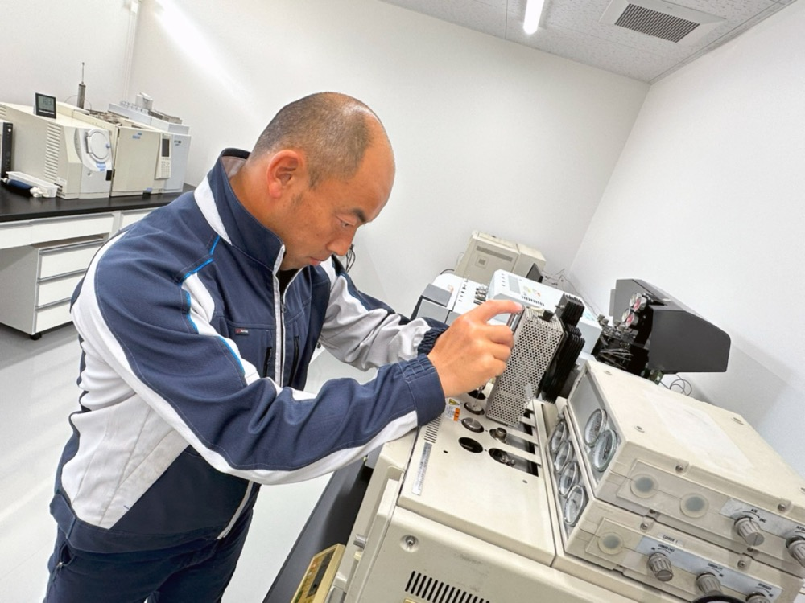
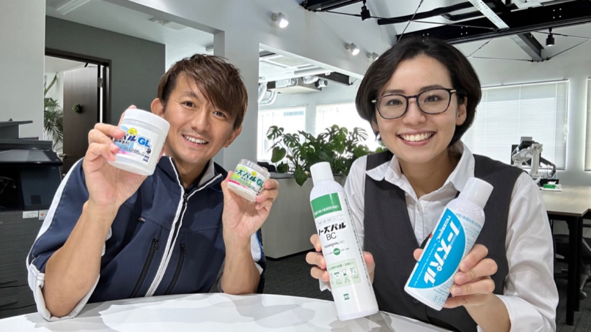

千葉の最先端都市に在る日本有数の「ニオイ対策」特化型企業
小林 晃樹Koki Kobayashi
エスポ化学株式会社 代表取締役
1990年、中央大学卒。2019年、エスポ化学株式会社に入社。2019年、総務部長就任。2020年、取締役総務部長兼営業開発本部担当部長就任。2021年、常務取締役管理本部長就任。2022年。代表取締役就任（第5代目）
企業サイトを見るTRACK 01
千葉の最先端都市に在る日本有数の「ニオイ対策」特化型企業

千葉市の最も西側にあり、幕張メッセやいなげの浜・多数の大学研究機関などが存在している千葉市美浜区。国際色豊かな都市機能と、ゆたかな住環境とを高度に融合させた未来型の都市として知られる。ここに、全国でも数少ない「ニオイのコンシェルジュ」として知られる会社が存在する。
エスポ化学株式会社。ニオイ対策のオリジナルプロダクトの開発・販売から、クライアントごとに異なる臭気対策のコンサルティング業務までを幅広く手がける、まさに臭気対策のトップランナーだ。
併設している開発研究ラボでは臭気の分析や、消臭剤の成分調整など行えるため、検収・納期を大幅に短縮できる一貫性が特徴で、日本のみならず海外にも複数のクライアントをもつ。
TRACK 02
風呂釜を改造して実験器具を自作していた創業期

1987年、故・小林暢生氏が大日本インキ化学工業株式会社（現DIC株式会社）在籍時に、両性高分子ポリマーをベースとした脱臭素材の開発に成功。その技術をもとに、暢生氏の弟である故・小林泰輔氏が創業したのがエスポ化学株式会社だった。社名のエスポ（ESPO）はEnvironment & Safety Protection Organizers（環境と安全を守り普及させる者）の頭文字をとって命名。これからニオイの業界の第一人者として全国を駆け抜けていくはずだった。
しかし起業後僅か4ヵ月で、社内に衝撃が走る。初代代表の泰輔氏が急逝したのだ。その後、起業当初数年間は赤字経営という苦しい時代もあったものの、残された社員は初代代表の遺志を受け継ぎ、薬剤性能アップへのたゆまぬ研究・実験を続け、消臭脱臭総合コンサルタント企業として事業規模を広げながら現在に至っているという。
「最初、社屋は創業者の自宅の一部を利用していたと聞いています。実験器具や製造器具も専門のものがないので、風呂釜を改良してお手製で作成したりと、大変な苦難の時代がありました…。長らく消臭剤の製造販売のみをおこなっていましたが、2020年には脱臭装置や臭気環境アセスメント業務に進出し、さらなる事業拡大に乗り出しました。そして昨年2023年には新社屋建設と、今この時期がまさに会社の転換期と言えると思います。」と小林代表は語った。


TRACK 03
代表就任後に着手した数々の「改革」
3代目代表であった父、小林俊弼氏はサラリーマンを定年退職後エスポ化学に営業開発部長として入社し、長らく会社を牽引されてきたという。しかし歳を重ね、両親から事業承継をたびたび打診されていた小林代表だが、当初は入社するつもりすらなかったという。「創業者の家系に生まれたわけでもないので、正直乗り気ではなかったんですよね。ただ、両親から色々と話を聞くうちにふと「今いる社員、そしてそのご家族はどうなるのか…？」と思ったんです。そして入社することで自分の残りの人生が少しでも誰かのためになるなら、と決心して入社したのがきっかけでした。」と、当時を懐かしみながら小林代表は語った。
そして2022年11月、5代目として代表取締役に就任。翌年4月の新社屋設立もすでに決まっており、同社全体が大きな転換期を迎える節目も迫っていて、身の引き締まる思いだったという。しかし一方で、一社員として見た会社のあり方に疑問を感じる点も多々あったという。だからこそ、就任してからはリビルド（再構築）そしてレビュー（見直し）が最初の着手点に違いないと確信していた、と小林代表は語る。
まずは社内におけるさまざまな申請業務（有給申請、出張申請、経費精算、営業報告など）をすべてオンライン上で済ませられるように、システムを新たに構築。そしてコロナ渦によりテレワーク業務なども増えていたため、勤務シフトのフレックス制度も採り入れた。